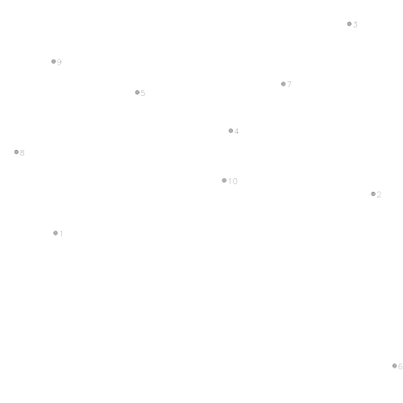
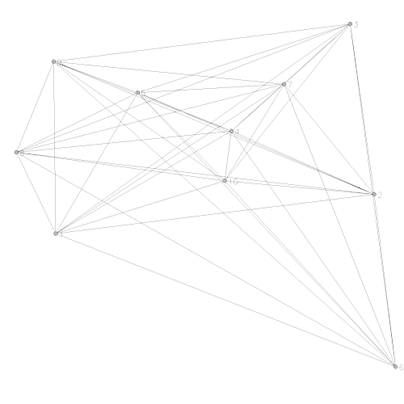
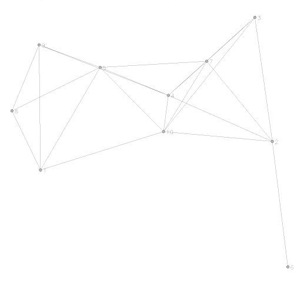
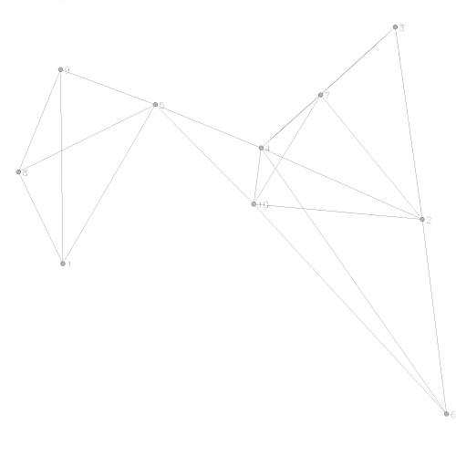
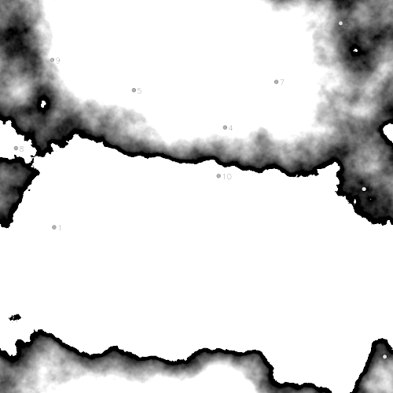
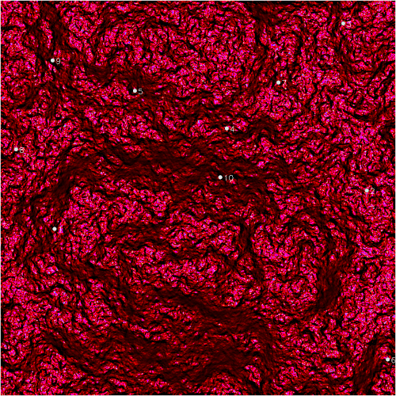
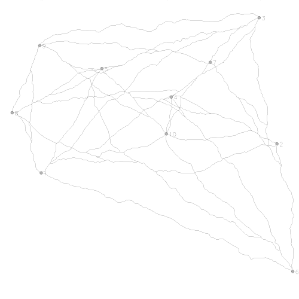
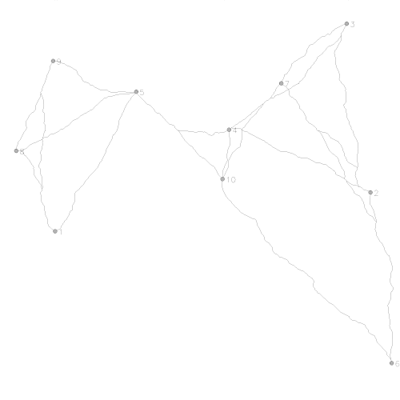

This program (v.net.models) performs model-based generation of
network links (represented as line geometries), given an input map with
network nodes (represented as points). A number of simple connectivity
models are available. More realistically shaped network links can be
generated ("reconstructed") by supplying a cost map as additional input.
This program supports the generation of very large and detailed networks.
The primary purpose of (v.net.models) is to serve as a tool for experimentation and research. Alternative network realizations can be generated and compared against one another or against the outputs of more complex simulation models (computed with other software). One possible application area is the reconstruction of historical networks given solely the locations of known places that can be assumed to have been part of the same network in the past.
To produce more realistic models, a raster cost map can be provided as additional input, in which case the reconstructed network links will represent least-cost paths (LCP) rather than straight-line distances (albeit the interpretation of "cost" in this case might not be straight-forward: see notes on cost-based operation).
A very basic "social space" connectivity model, based on similarities of attribute field contents, is also available. This is intended solely for comparison with the "physical space" connectivity models in v.net.models and not as a replacement for a complete Social Network Analysis (SNA) toolkit.
Flexible options exist for filtering the nodes that go into the reconstruction, and the program's output is enriched with useful statistics in the output maps' attribute tables.
To support the generation of large networks models, including a large number of input nodes and high-resolution cost maps, v.net.models offers various options for increasing computational efficiency and reducing processing times. See notes on performance for more information.
See usage examples for an illustrated walk-through of this program's capabilities.
TODO: reserved field names; topological
quality; unbroken CAT sequence, data types for key and label fields; nodes
input map must have unbroken AND steadily increasing "cat" sequence,
starting at "1"!
Minimal input (option "input=") consists of a map that contains (at least two) points which represent the nodes of a network. The attribute table of this input map must contain at least one field that stores a unique primary key value for each point. The name of this field must be provided using option "key=", and it must not be the default GRASS primary key field (usually "cat"). To improve the legibility of the messages and output data that v.net.model produces, a second attribute field, containing a more verbatim label text for each input node, is recommended. A label field name can be provided via "label=".
Using option "initial=", it is possible to load an initial model into the program. The initial model is simply a vector map containing lines that represent network links. These might have been generated by a previous run of v.net.models or via any other method. The main purpose of this is to provide a caching mechanism for better performance (see using an initial links map for details). Note that the initial model's attribute table schema must match the output of v.net.models (if in doubt: look at the attribute table schema of the output map specified by "links="). Output maps produced by v.net.models itself should never cause any issues.
Computation of realistic LCP representations of network links requires an additional raster cost map, to be specified via option "costmap=". If a cost map is provided, then only input points in the current GRASS region will be processed. Additionally, if a cost map is provided, then none of its cells are allowed to be NULL in the current region.
Further details on program input and processing settings (flags) can be found in flags and parameters.
The input data is never modified by v.net.models.
TODO: -r(educe)
It is possible to reduce the number of input nodes that v.net.models will process (option input=""), either by specifying GRASS primary key ranges (option "cats=") or by using an SQL WHERE statement (option "where=").
In addition, the set of input nodes will be reduced to those within the
current GRASS region if a raster cost map is supplied (see above).
Note that v.net.modules will refuse to run if there are less than two input nodes left after filtering.
TODO
In some cases, processing results will depend on the order of input nodes.
TODO
This program will read the points in the input map or a subset of them (if any of the data selection options/flags are used: see flags and parameters). It will then generate a set of new lines (links) to connect all, some or none of the points in the input data, depending on the chosen connectivity model (option "model=") and its parameters.
The following connectivity model choices have been implemented (in alphabetical order):
Of the models above, "attsim" and "xtent" require additional attributes in the input points map (see model details).
Additionally, it is always possible to enforce a cut-off distance for all connections using option "maxdist=". No links will be established between points that are more than this distance (or cost, if a cost surface is also provided) apart from each other, regardless of any other model parameters. Using option "maxdist=" in conjunction with model type "complete" therefore provides a very basic "maximum connection distance/cost" model.
Further instructions on how to control the processing can be found below, in flags and parameters.
This program is very strict about correctness of parameters. If invalid
option values, contradictory option and/or flag specifications, or related
issues are detected, processing will abort with a descriptive error
message.
Program output consists of two new vector maps: one (geometry type "line") for the generated links (option "links="), and another one (geometry type "point") for all retained nodes (option "nodes="). Each line in the links output map (specified by "links=") will contain the following attribute fields:
In addition, the program will print summary statistics on all nodes and links as part of its console output.
This section provides details on the available choices for option "model=".
Note that only one model can be computed in one run of v.net.models. Except for "complete", each model uses at least one formal connectivity criterion to decide which points of the input map to connect. Depending on the model used, these criteria might be completely data-driven or have to by supplied using the appropriate program option(s). A connection is represented as a link (in the output vector map set by "links=") that takes either the form of a simple straight line or a more intricately shaped LCP polyline (if "costmap=" is provided).
Note that all models connect suitable point pairs via a shared link. This implies that a link from point A to point B does at the same time represent a link from point B to point A (i.e. A->B == B->A).
Note also that option "maxdist=" can be used to introduce an additional connectivity limit (by absolute distance or cost) that will be respected by all model choices. "Distance" is measured as straight-line Euclidean distance by default, as cumulative cost along an LCP (if a cost surface is provided via "costmap=" or an initial model with a "cost" attribute is provided via "initial="), or as on-the-ground distance along an LCP, if the "-m" flag is also set.
Setting "model=attsim" requires option "attributes=" to be specified, as well. The latter must be a list with one or more names of fields (comma separated) that exist in the input points map.
The contents of all fields listed in "attributes=" will be compared across all input points. Two points will be connected if they have at least on field's content in common. Comparison of field contents is exact and case sensitive. Empty fields are allowed.
Each point in the links output map (specified by "links=") will be attributed with an additional field:
In addition, this model choice serves a special purpose, as it will also be computed initially if not chosen explicitely. The reason for this is that v.net.models implements a unified computational approach: It always computes a complete model first, then reduces the number of links according to the connectivity criterion of another model (if applicable). The main advantage of this is that, in many cases, it will be sufficient to compute the complete connectivity model only once (setting "model=complete") and storing it. For every subsequent run on an unmodified set of input points, the stored complete model can be reloaded using "initial=".
For each point (=node) in the input map, n links are generated, connecting that node and the n nearest nodes around it. "Nearness" is measured as straight-line Euclidean distance by default, as cumulative cost along an LCP if a cost surface is provided ("costmap="), or as on-the-ground distance along an LCP, if the "-m" flag is also given.
The original XTENT model is an example of a simple gravity model that was conceived for computing areas of influence (territories) around central sites (see Renfrew & Level 1979):
I = C^a - k*d
In the formula above, I is the influence that a center exerts on a given location. The basic idea is that each location will be allocated to the center (i.e. part of its territory) that scores the highest I at that location. The magnitude of I at a location is determined for each center by two terms that are weighted against each other: center weight (or size) C and distance d. Obviously, a large center in close proximity will have the best chance to score the highest I (i.e. "dominate" a location). But a very large center can still be dominant, even if it is farther away.
The two coefficients a and k determine the balance between center size and distance. The importance of distance increases in a linear manner while the importance of size increases exponentially. Thus, larger centers will compete stronger in relation to smaller ones, even at an increased distance.
This program implements a version of XTENT that has been slightly modified to work with network data, but retains XTENT's original principles. In this case, the network nodes represent the centers (C), and I serves as connectivity criterion: Two nodes will be connected if their combined influence is > 0. The outcome is independent of direction, i.e. it does not matter whether I of node A is computed at node B or vice versa.
Since cost-based distances do not always relate (easily) to simple spatial distances, it can be exceedingly hard to find ranges for the a and k parameters that will overlap well enough to produce stable results. For this reason, the modified version of XTENT used here preforms simple normalization of the "C" term by both (cost) distance and maximum "size". This also implies that neither cost distances nor node "sizes" have to be expressed as real-world physical units. "Size" can represent population estimates, resources but also simple rankings or scores to express relative differences in node weights:
I = ( C^a * ( avg(d) / max(C) ) ) - k*d
Global model parameters a and k are set via options "a=" and "k=", respectively; while C is read individually for each point in the input map, from the (numeric) attribute field specified via "size=". In addition, the averaging function avg(d) can be chosen using option "avg=".
Distance d is measured as straight-line Euclidean distance by default, as cumulative cost along an LCP (if a cost surface is provided via "costmap=" or an initial model with a "cost" attribute is provided via "initial="), or as on-the-ground distance along an LCP, if the "-m" flag is also set.
Since v.net.models is a very flexible program, understanding all of its functionality, and how options and flags interact, can be a challenge. This section offers some in-depths explanations of the more complex program features. Also make sure to study the usage examples at the end of this document.
More realistic results can be obtained by:
The second case (option "initial=") is handled a little differently and will not be describe here: Refer to using an initial links map for details.
In both cases, the "-m" flag can be set to use accurate on-the-ground lengths (measured in meters) of links instead of their costs.
On the subject of what constitutes a valid cost surface raster, it must be noted that v.net.models makes no assumptions regarding plausibility, "correctness" or even any relation to physical units (such as caloric expenditure). It is completely up to the user to decide what the raster map passed via "costmap=" should encode in its cell values, as long as each value is "0" or any other positive number. Negative cost values are not allowed and will be converted to "0" automatically at runtime!
This, of course, means that it is also completely up to the user to interpret what these values mean (the cost of constructing links, moving across them, maintaining them, ...) in the context of network exploration and analysis with v.net.models.
As mentioned, v.net.models employs r.cost to do the actual work of finding the LCP between each pair of network nodes and computing the accumulated cost. This is done at great accuracy, but if the input cost surface is of low resolution and/or contains a relatively small number of unique values, then quantization effects will be unavoidable and result in "jagged" or "stepped" line geometries. A simple way of compensating for this is by introducing an error margin via "costerr=", the value of which is interpreted as a "+/- n%" random error. Additionally, "costres=" can be used to increase the resolution of the cost surface by a factor of up to "10" before applying the random error values. In any case, the internal cost model of v.net.models is isotropic, meaning that the cost of a link from node A to B is assumed to be identical with the cost from B to A (see caveats).
As an extension to LCP-based
reconstruction of network links, v.net.models
implements the notion of a cost
synergy effect. This effect controls the degree to which existing
links are re-used by new links during the iterative process of adding one
link after another to construct the entire network. The option "costsyn="
takes a value between "0.0" (no synergies) and "1.0" (maximum synergies)
to set the strength of the cost synergy effect. After applying the cost
synergy effect, the new cost c2 is derrived from the previous cost
value c1 by the simple formula c2=c1*(1-costsyn).
Thus, with increasing strength, redundant network links will be
increasingly avoided and the network will be stream-lined towards a set of
dominant links and its branches. In most scenarios, using at least a mild
cost synergy effect will produce more realistically shaped networks.
Note that the order of nodes (see notes on
input sorting) in the input map ("input=")
matters in case of the cost synergy effect, since network links that are
established earlier will influence the shape of links established later
in the network reconstruction process.
Also note that multi-threaded processing (see notes on processing performance) is not possible if a cost synergy effect is applied, since the result of each iteration of the link generation process will directly depend on that of the previous ones.
Also note that automatic
adjustment of input nodes to the centers of the cost map's cells
will slightly change the spatial locations of network nodes in the nodes
output map.
This serves several important purposes:
In addition to the fields listed above, the initial links map has further attribute fields that describe the geometric properties of its links:
If either "length_m" or "length_km" is missing, both will be recomputed.
In the case of the "cost" attribute, program behaviour is more complex. Essentially, if a "cost" attribute field exists in the initial links map (and is of type double and contains complete data), then v.net.models will run in cost-based mode (see notes on cost-based operation). If "cost" is not present, then v.net.models will run in "path distance" mode, reading link lengths from attribute field "length_m" (equivalent to setting the "-m" flag), unless a cost surface is provided using option "costmap=", in which case link costs will be computed and the "cost" attribute added automatically (but see description of caveats, below). Providing both "costmap=" and an initial links map with a "cost" attribute is ambiguous and will produce an error.
Whenever missing attributes are added, they will be added to a temporary copy of the initial links map; the original input data will never be touched. To keep an attribute-amended version of an initial links input map as permanent output, run a "complete" model with a "maxdist=" setting that exceeds the length of any of the links in the map.
Finally, there are some caveats to using "initial=":
TODO: links and nodes; input topology
test; node adjustment; costsyn; -d(rop); crossings, forks and shortcuts
with costsyn=
TODO: -k, costmem=; threads=; DBMS backends; lage input node maps: skip topology tests (assure manually); large input node maps: avoid sortby and ensure properly sorted, unbroken sequence of primary keys manually
The operation of v.net.models can consume signficant computational resources if run on large input datasets. Since the program uses a unified "connect all, then reduce" approach, a complete network will always be created first (see notes on complete model), and computational cost increases linearly depending on the number of input nodes. More specifically:
Full details on using option "initial=" can be found in the section on using an initial links map.
Since v.net.models performs a large number of attribute table queries, performance will be reduced significantly if the (default) DBase ("dbf") database driver is used within the current GRASS mapset. Instead, using SQLite ("sqlite") or another capable SQL database driver is highly recommended. Use db.connect to get/set the currently used database driver.
The following is a complete list of the flags and options (=parameters) available in v.net.models. Extended descriptions are provided for those items which are not self-explanatory or have not been discussed in more specific context in any of the previous sections.
In the following, a hands-on introduction to the basic use of v.net.models from the GRASS GIS command line is provided.
Note that this introduction uses random data that is generated on-the-fly. This means that it will not be possible to exactly reproduce the illustrations shown here. But it should be possible to generate results of a similar nature without the program failing to execute any instructions.
It is recommended to execute the instructions below from within a newly created GRASS mapset, in a location that uses a simple "non-world" (XY) coordinate system. This way, there will be no risk of overwriting existing data, and all data produced during this introduction can be wiped by deleting the respective mapset.
g.region n=1000 s=0 e=1000 w=0 res=1
v.random output=places npoints=10
Add an attribute table (by default unpopulated, except for GRASS primary key field "cat"); since v.net.models strictly requires an independent primary key field: Add an integer type field "key" at the same time.
v.db.addtable map=places columns="key INTEGER"
Copying the GRASS primary key values into "key" is sufficient for this simple example:
v.db.update map=places column="key" value="cat"
This constitutes the absolutely minimal input for v.net.models:

A complete model, where every node is directly connected to every other node:
v.net.models input=places links=links_complete
nodes=nodes_complete key="key"
This produces both network links and a new map of nodes with additional attribute data as output:

Using maxdist= is a simple means of limiting network connectivity. Using flag -d makes sure that the set of output nodes will only include those that are actually connected to at least one other node: v.net.models input=places links=links_complete_d500
nodes=nodes_complete_d500 key="key" maxdist=500 -d

Model choice "nn" connects each node to its nearest neighbors. The number of nearest neighbors must be specified using "neighbors=": v.net.models input=places model=nn neighbors=3 links=links_nn3
nodes=nodes_nn3 key="key" -d

Least-cost paths are more realistic representations of link shapes. A common use-case is to derive construction or usage costs of links from terrain shape (links across planar terrain are "cheaper" than those across e.g. mountaineous areas).
Synthetic terrain can be produced using a fractal raster surface:
r.surf.fractal d=2.00001 output=surface

Working under the assumption that flat terrain is "cheaper" to link across than steep slopes, a slope map is a plausible approximation of cost: r.slope.aspect elevation=surface slope=slope

To produce a cost-based model, the slope map is injected using option "costmap=": v.net.models input=places links=links_complete_c
nodes=nodes_complete_c key="key" costmap=slope

In the same manner, models other than "complete" will now also respect cost-based distances: v.net.models input=places model=nn neighbors=3 links=links_nn3_c
nodes=nodes_nn3_c key="key" costmap=slope -d

Once a complete model has been computed, its output (as specified by option "links=" in the original run) can be used to provide an initial links input map (option "initial="). This will considerable speed up model computations for larger datasets (for any model choice except "complete"):
v.net.models input=places model=nn neighbors=3 links=links_nn3_c
nodes=nodes_nn3_c key="key" initial="links_complete_c" -d
TODO: -k does not work well in conjunction
with costsyn; sub-cell inaccuracies with costsyn.
When running in cost-based mode, this program will consume large amounts of storage space for temporary raster maps. This resource will only be released once the program has completed or has been aborted by the user.
The underlying cost model is isotropic, i.e. there is no (relevant) difference between connecting "directions" A->B and B->A in terms of distance and/or cost. By extension, this also means that there will always be only one link between A and B. There is no provision for representing the case where A->B requires a different link than B->A. Note that it is possible to circumvent the isotropic cost restriction by precomputing least-cost paths on an anisotropic cost map (using e.g. r.walk) and specifying option "initial=" to load them, but the latter constraint (single linkage) still holds.
Least-cost path computations suffer from edge effect: if a lower-cost past exists through a "hinterland" that is not part of the current region, then it will not be found. To mitigate this problem, the input cost map should cover the extent of the input points plus a significant "buffer zone".
There is no guarantee for topological correctness of the this program's output. In fact, most models are likely to produce topologically flawed links as output, especially in cost-based mode.
This program is a Bourne Shell script that relies on the following external tools:
Renfrew, C. & Level, E. V. 1979: Exploring Dominance: Predicting Polities from Centers. In (Renfrew, C. & Cooke, K. L. (Eds.): Transformations: Mathematical Approaches to Culture Change, Academic Press, 1979, 145-166.